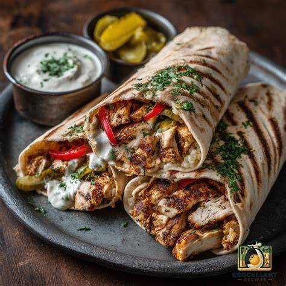

Shawarma

Description
Chicken Shawarma is a classic Middle Eastern street food made with tender,
marinated chicken slices roasted to perfection with aromatic spices.
Wrapped in warm pita bread with creamy garlic sauce, pickles, and crispy fries,
it offers a rich and savory flavor in every bite.
Ingredients
- 500g boneless chicken breast or thighs, thinly sliced
- 3 tablespoons plain yogurt
- 2 tablespoons olive oil
- 2 tablespoons lemon juice
- 3 cloves garlic, minced
- 1 teaspoon cumin, 1 teaspoon paprika, and 1/2 teaspoon turmeric
- Salt and black pepper to taste
- Pita bread, garlic sauce (Toum), and sliced pickles for serving
Steps
- Mix the yogurt, olive oil, lemon juice, minced garlic, and all spices in a large bowl to make the marinade.
- Add the sliced chicken to the bowl, coat well, and let it marinate in the fridge for at least 1 hour.
- Heat a large skillet over medium-high heat and cook the chicken for 8 to 10 minutes until golden brown and fully cooked.
- Spread garlic sauce on warm pita bread, add the cooked chicken and pickles, roll it tightly, and serve hot.
Home